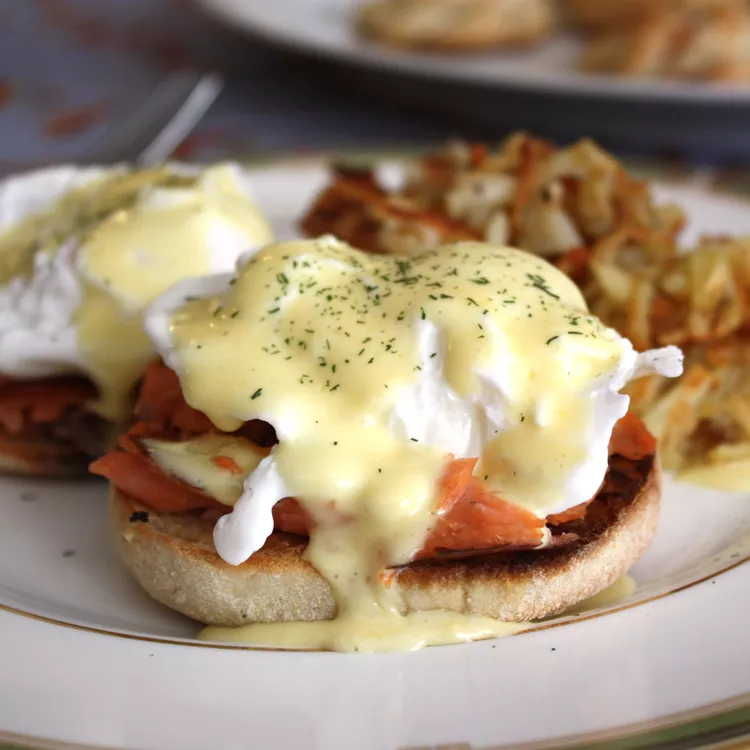

Strawberry Spinach Salad

Description
This blender Hollandaise recipe,
which comes together in a few minutes with a few ingredients,
proves that Hollandaise sauce doesn't have to be intimidating.
Ingredients
- 3 egg yolks
- 1 tablespoon lemon juice
- ¼ teaspoon Dijon mustard
- 1 dash hot pepper sauce (e.g. Tabasco™)
- ½ cup butter
Steps
- Combine egg yolks, lemon juice, mustard, and hot pepper sauce in the container of a blender;
cover and blend for about 5 seconds.
- Place butter in a glass measuring cup. Heat butter in the microwave for about 1 minute,
or until hot and completely melted.
- Turn the blender on; pour melted butter in a slow,
steady stream until sauce is thick and smooth, about 15 to 30 seconds.